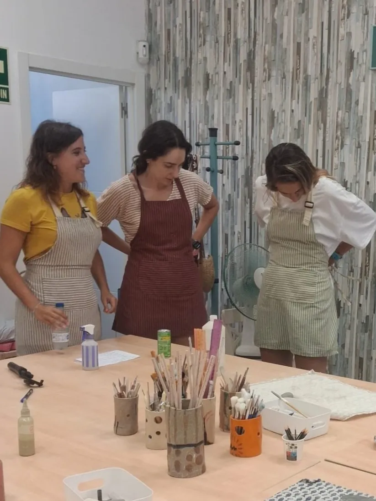
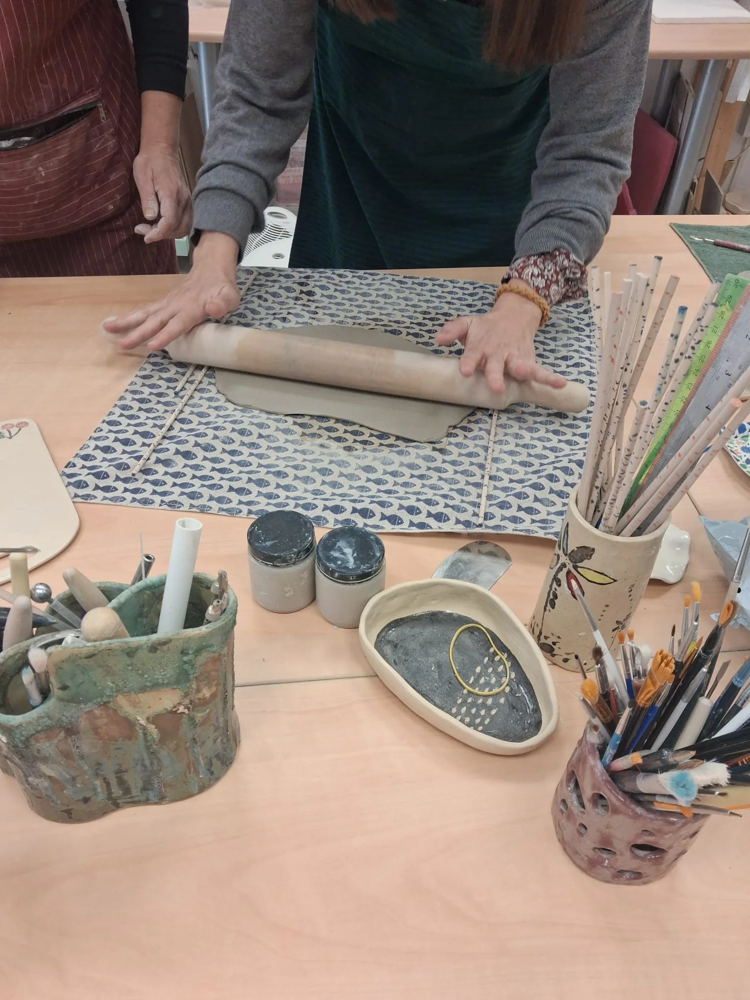
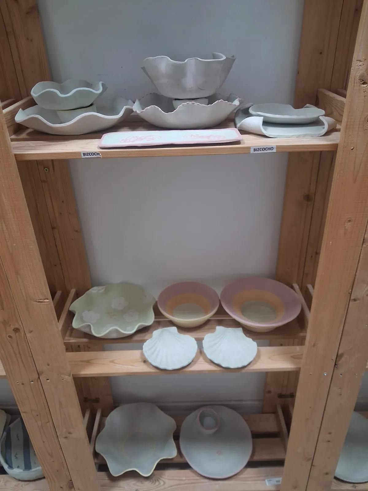
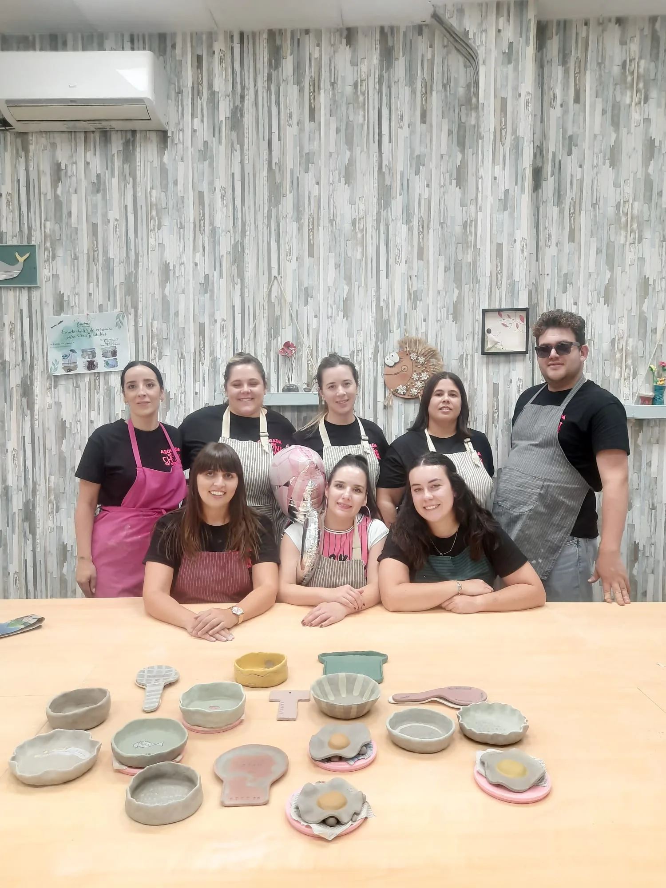

Sabemos que la primera vez genera dudas: ¿me voy a manchar entera? ¿se me va a dar fatal? ¿qué me tengo que llevar? Aquí tienes el recorrido real, paso a paso, de lo que ocurre desde que entras por la puerta hasta que te llevas tu pieza a casa.
Antes de llegarQué te tienes que llevar (spoiler: casi nada)
No necesitas experiencia, ni ropa especial de "manualidades", ni materiales propios. Solo te recomendamos ropa que no te importe manchar un poco y, si tienes el pelo largo, algo para recogerlo. Nosotros ponemos delantales, barro, herramientas y esmaltes.

Los primeros 15 minutosPresentación y primer contacto con el barro
La clase empieza siempre con una breve introducción: qué vamos a hacer, con qué técnica y por qué. Como en casi todos nuestros talleres la temática es libre, os mostramos las piezas más comunes que se suelen hacer (adaptadas a la duración del taller); y si algún alumno tiene una idea concreta que por tiempo y dificultad creemos que se puede hacer, pues nos ponemos manos a la obra. Si en ese momento no se te ocurre qué hacer, no te preocupes: en nuestra galería tienes un montón de piezas hechas por otros alumnos para coger ideas antes de empezar. Después llega el momento que más nervios genera y que menos dura: tocar el barro por primera vez. En dos minutos, ese nervio inicial desaparece.

El cuerpo de la claseTorno o modelado a mano, según el taller elegido
Si tu taller es de torno, pasarás la mayor parte del tiempo centrando el barro (la parte más técnica) antes de darle forma. Si es de modelado a mano, empezarás a dar forma casi desde el primer minuto. En ambos casos, Montse va pasando mesa por mesa, corrigiendo y ayudando de forma individual.


Cuando termina la claseSecado, cocción y recogida de tu pieza
Tu pieza no sale del taller ese mismo día: necesita secarse, pasar por su primera cocción (bizcocho), esmaltarse y cocerse de nuevo. Es un proceso de entre 2 y 3 semanas que hacemos nosotros en el taller. Te avisamos cuando puedes venir a recogerla, ya lista para usar.

Lo que se llevan casi todosMás tranquilidad de la que esperaban
Lo que más repiten quienes vienen por primera vez no es "qué bonito me ha quedado", sino "qué a gusto he salido". Concentrarte en algo con las manos, sin pantallas ni prisa, tiene ese efecto casi sin que te des cuenta.

Ven a probar tu primera clase
Grupos pequeños, sin experiencia necesaria y acompañamiento durante toda la sesión. Elige el taller que más te apetezca.